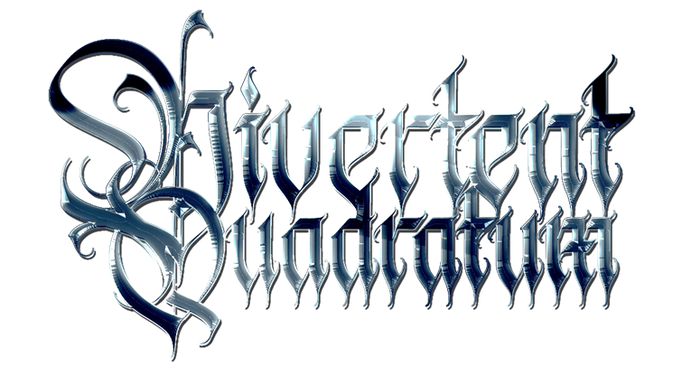

|  |
A CONCERT IN MINECRAFT
our first concert and server, meaning that there are might still have some problems o_o
play.divertentquadratum.live
(don’t access this link by browser, it’s for minecraft server doe o_o)
requirement:
Minecraft Java Edition 1.15.2
(shader is suggested for better experience)
[see guide below]
guide:
[AUDIO]
we will use castbox.fm to cast the audio
the official link will be updated
[SERVER]
1. connect server manually with the address: play.divertentquadratum.live
(don’t direct connect)
2. enable the resource pack, and join
3. register a password in the chat, it should be typed like this:
/register <yourpassword> <confirmpassword>
4. done! enjoy the concert.
[SHADER]
recommend using sildur’s shader pack
required: using OPTIFINE for minecraft 1.15.2
installation:
1. go to options à video setting à shaders
2. click shader folder will open a folder to drag a zip-packed shader file
it will automatically add the shader in the list
3. choose the shader and done